Descaling
The ability to descale is a wonderful tool to have in any encoder’s arsenal. You may have heard before that most anime are not native 1080p, but a lower resolution. But how do we make use of that? How do you find the native resolution and reverse the upscale?
When and where to descale
There are many circumstances where descaling might prove beneficial. For example, say you’ve got a very blurry Blu-ray source. Rather than sharpening it, you might want to consider checking if it’s possible to descale it and maybe alleviate a lot of the blur that way. Or the opposite: say you’ve got a source full of ringing. It might have been upscaled using a very sharp kernel, so it’s worth a try to see if it can be descaled. It’s no surprise that descaling tends to offer far better lineart than usual rescaling does.
However, descaling is not always an option. The worse your source is, the less likely it is that descaling will yield better results than a simple resample. If you’ve got a source full of broken gradients or noise patterns, like your average simulcast stream, descaling might only hurt the overall quality. Sadly, sources with a lot of post-processing might also prove tough to properly descale without dabbling with specific masks. However, as long as you’ve got a source with nice, clean lineart, descaling might be a viable option, and possibly nullify the need for a lot of other filtering.
Preparation
To prepare for figuring out the native resolution, you’ll want to use getnative, a Python script designed for figuring out the resolution a show was animated at. For the actual descaling, make sure to grab BluBb-mADe’s descale.
One important thing to keep in mind when descaling is that you will never find “the perfect descaling settings”. Even if you find the exact settings that the studio used, you won’t be able to get a frame-perfect replica of the original frame. This is because the best available sources to consumers, usually Blu-rays, aren’t lossless. There are always going to be some differences from the original masters which makes it impossible to perfectly descale something. However, usually those differences are so small that they’re negligible. If you run into a case where you can’t find any low relative error spikes, descaling can be highly destructive. It’s instead recommended to resize as you would normally, or to not mess with scaling at all.
Finding out the native resolution
To figure out what the native resolution of an anime is, first you need a good frame to test. Ideally, you’ll want a bright frame with as little blur as possible of high quality (Blu-ray or very good webstreams). It also helps to not have too many post-processed elements in the picture. Whilst it is most definitely possible to get pretty good results with “bad” frames, it’s generally better to use good frames whenever possible.
Here are some examples of “bad” frames.
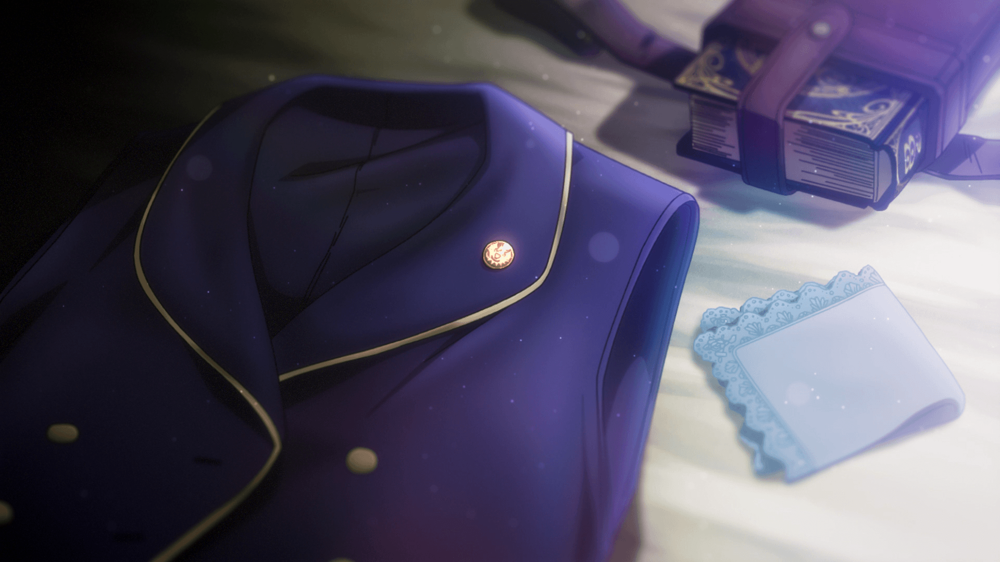 Manaria Friends — 01 (frame 1)
This picture is dark. It also has some effects over it.
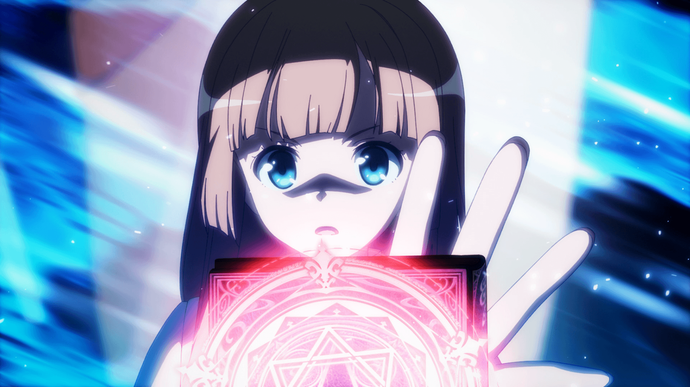 Manaria Friends — 01 (frame 2)
This picture is also very dark and has even more effects over it.
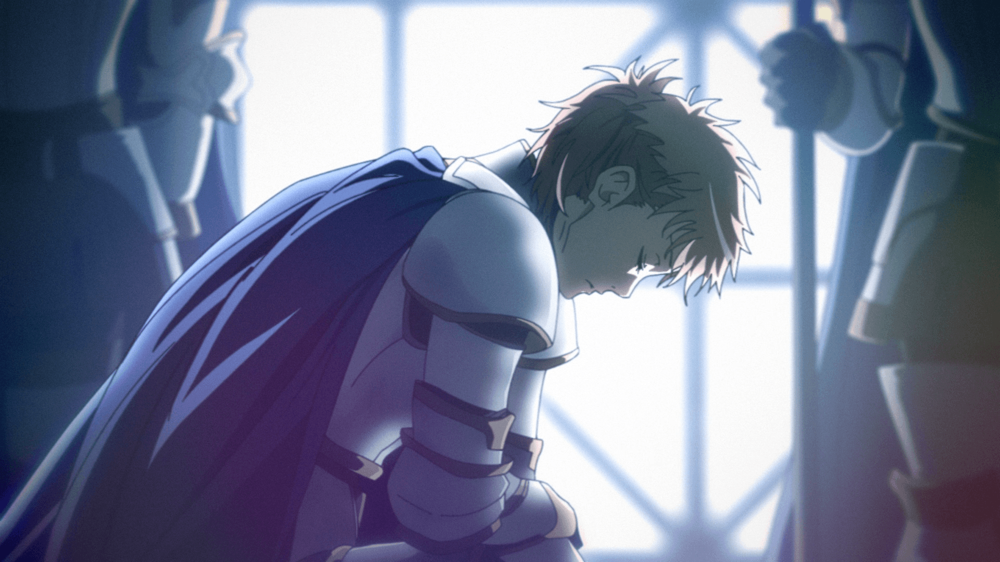 Manaria Friends — 01 (frame 3)
Heavy dynamic grain will almost always give bad results.
Manaria Friends — 01 (frame 4)
This is a nice frame to use as reference. The background is a bit blurry, but it isn’t full of effects and is fairly bright. The lineart is very clear.
We will now make use of the getnative.py script to figure out what resolution this anime was produced at. Run the following in your terminal:
$ python getnative.py "descale_manaria04.png"
It should show the following:
Using imwri as source filter
501/501
Kernel: bicubic AR: 1.78 B: 0.33 C: 0.33
Native resolution(s) (best guess): 878p
done in 18.39s
If you check the directory where you executed the script, you will find a new folder called “getnative”. You can find the following graph in there as well:
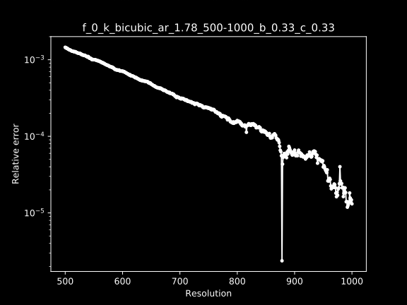 Manaria Friends — 01 (frame 4 getnative graph)
The X-axis shows the resolutions that were checked, and the Y-axis shows the relative error. The relative error refers to the difference between the original frame and the rescaled frame. What you’re looking for are the spikes that show a low relative error. In this case it very clearly points to 878p.
As a sidenote, it’s important to keep in mind that this script can’t find native 1080p elements. This is because it descales the frame and re-upscales it afterwards to determine the relative error. You can’t descale to 1080p if the frame is already 1080p. If you have reason to believe that your show might be native 1080p, you’ve got to go with your gut.
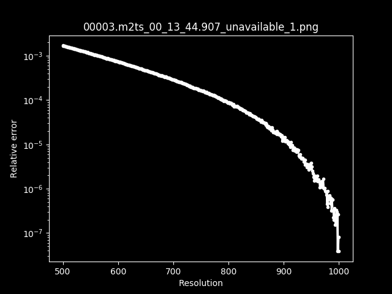 Date A Live III — 01 (getnative graph)
An example of a graph for a native 1080p show.
You may notice that the line swerves a bit in the first graph. There are going to be cases where you will get odd graphs like these, so it’s important to know when the results are safe enough to descale or when they’re too risky. Here is an example of a “bad” graph:
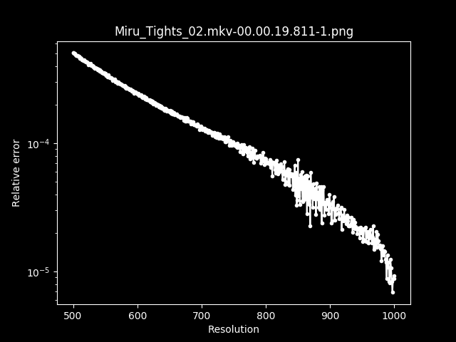 Miru Tights — 02 (getnative graph)
Output:
Kernel: bicubic AR: 1.78 B: 0.33 C: 0.33
Native resolution(s) (best guess): 869p, 848p
The script has determined that it’s likely either 848p or 869p. However, there are no clear spikes in this graph like there was in the Manaria Friends one. The results are not clear enough to work off of. Here’s another example:
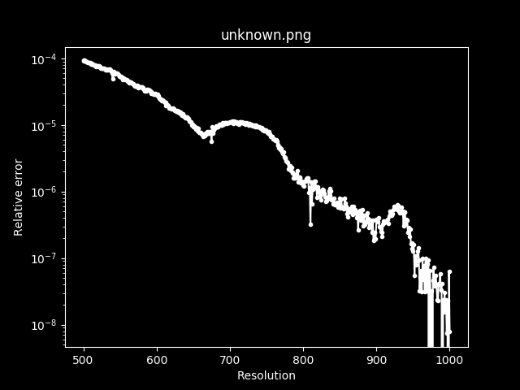 Black Lagoon (getnative graph)
Output:
Kernel: bicubic AR: 1.78 B: 0.33 C: 0.33
Native resolution(s) (best guess): 1000p, 974p, 810p
This graph has a lot of unnatural swerves and it’s impossible to determine what the native resolution is.
Another pitfall you’ve got to watch out for is checking the results of a frame with letterboxing.
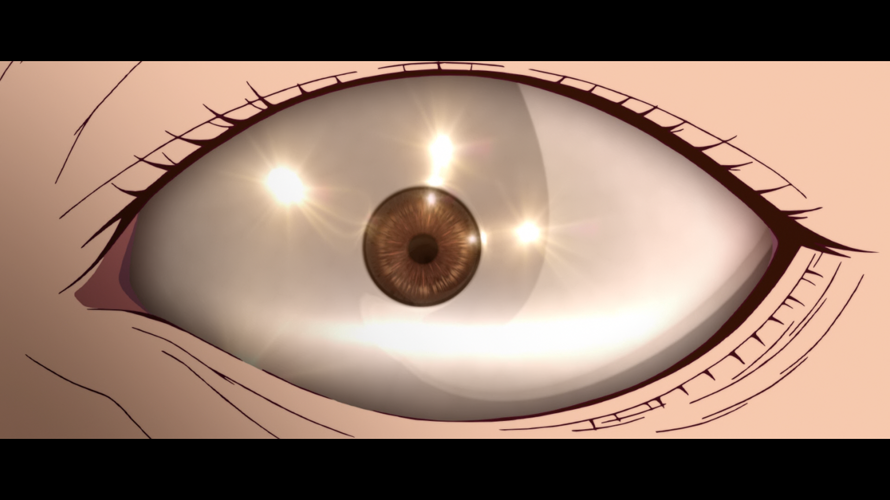 Kizumonogatari I
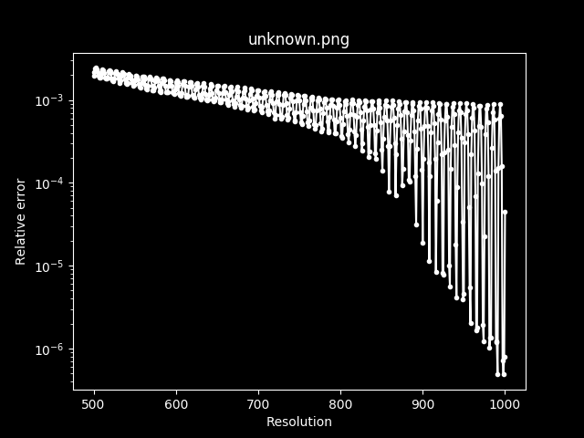 Kizumonogatari I (getnative graph)
You will have to crop them beforehand or they will return odd graphs like this.
For a change of pace, let’s look at a good graph.
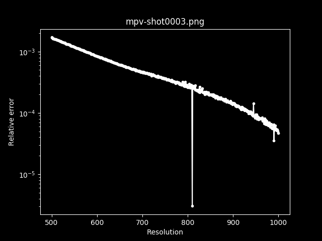 Aikatsu Friends! — NCOP (getnative graph)
Output:
Kernel: bicubic AR: 1.78 B: 0.33 C: 0.33
Native resolution(s) (best guess): 810p
The results are very clear. There are a couple of deviations, but there’s a very clear spike going down to 810p. This is a good result for testing out varying kernels.
Descaling
Now it’s time to actually start descaling. Open up your VapourSynth editor of choice, and import the clip:
src = core.lsmas.LWLibavSource("BDMV/[BDMV][190302][マナリアフレンズ I]/BD/BDMV/STREAM/00007.m2ts")
The next issue is figuring out what was used to upscale the show. By default, getnative.py checks with Mitchell-Netravali (bicubic b=1/3, c=1/3). However, it might have also been upscaled using other kernels.
Here is a list of some common kernels and values.
- Lanczos
- Spline16
- Spline36
- Bilinear
- Bicubic b=1, c=0 (B-Spline)
- Bicubic b=0, c=0 (Hermite)
- Bicubic b=1/3, c=1/3 (Mitchell-Netravali)
- Bicubic b=0, c=0.5 (Catmull-Rom)
- Bicubic b=0, c=1 (Sharp Bicubic)
The best way to figure out what is used is to simply try out a bunch of different kernels and use your eyes. Check for common scaling-related artifacting, like haloing, ringing, aliasing, etc.
For bicubic, it is important to keep in mind that you will typically find that the values match the following mathematical expressions:
b + 2c = 1b = 0, c = Xb = 1, c = 0
Whilst this isn’t a 100% guarantee, it is the most common approach to rescaling using bicubic, so it’s worth keeping in mind.
Here’s an example of the previous frame
when descaled using various kernels and settings
(note that descale requires either GrayS, RGBS, or YUV444PS.
I’ll be using split and join from kagefunc to split the planes
and then join them again in this example,
and get_w from vsutil to calculate the width)1:
from vapoursynth import core
import vsutil
import kagefunc as kgf
import fvsfunc as fvf
src = core.lsmas.LWLibavSource("BDMV/[BDMV][190302][マナリアフレンズ I]/BD/BDMV/STREAM/00007.m2ts")
src = fvf.Depth(src, 32)
y, u, v = kgf.split(src)
height = 878
width = vsutil.get_w(height)
# Bilinear
descale_a = core.descale.Debilinear(y, width, height).resize.Bilinear(1920, 1080)
descale_a = kgf.join([descale_a, u, v])
# Mitchell-Netravali
descale_b = core.descale.Debicubic(y, width, height, b=1/3, c=1/3).resize.Bicubic(1920, 1080, filter_param_a=1/3, filter_param_b=1/3)
descale_b = kgf.join([descale_b, u, v])
# Sharp Bicubic
descale_c = core.descale.Debicubic(y, width, height, b=0, c=1).resize.Bicubic(1920, 1080, filter_param_a=0, filter_param_b=1)
descale_c = kgf.join([descale_c, u, v])
# B-Spline
descale_d = core.descale.Debicubic(y, width, height, b=1, c=0).resize.Bicubic(1920, 1080, filter_param_a=1, filter_param_b=0)
descale_d = kgf.join([descale_d, u, v])
# Catmull-rom
descale_e = core.descale.Debicubic(y, width, height, b=0, c=1/2).resize.Bicubic(1920, 1080, filter_param_a=0, filter_param_b=1/2)
descale_e = kgf.join([descale_e, u, v])
# Spline36
descale_f = core.descale.Despline36(y, width, height).resize.Spline36(1920, 1080)
descale_f = kgf.join([descale_f, u, v])
You might realize that after descaling, we are immediately upscaling the frame with the same kernel and values again. This is done so we can compare the before and after. The closer the new frame is to the old one, the more likely it is that you’ve got the correct kernel. Zooming in on the frame at 4x magnification or higher using Nearest Neighbor will help immensely. An alternative that you can use is to simply descale until you’ve got what you believe to be the best result. It’s faster to do it this way, but might be less accurate.
Credits and other native 1080p elements
There is one very, very important thing to keep in mind when descaling:
Credits are usually done in 1080p.
There are various masks you can use
to help with dealing with that issue,
but it might be better
to make use of existing wrappers instead.
For this example I’ll
be using inverse_scale from kagefunc.
descaled = kgf.inverse_scale(src, height=878, kernel='bicubic', b=0, c=1/2, mask_detail=True)
We can make use of the mask
that inverse_scale uses internally
as well.
descaled = kgf.inverse_scale(src, height=874, kernel='bicubic', b=0, c=1/2)
descaled_mask = kgf._generate_descale_mask(vsutil.get_y(core.resize.Spline36(src, descaled.width, descaled.height)), vsutil.get_y(descaled), kernel='bicubic', b=0, c=1/2)
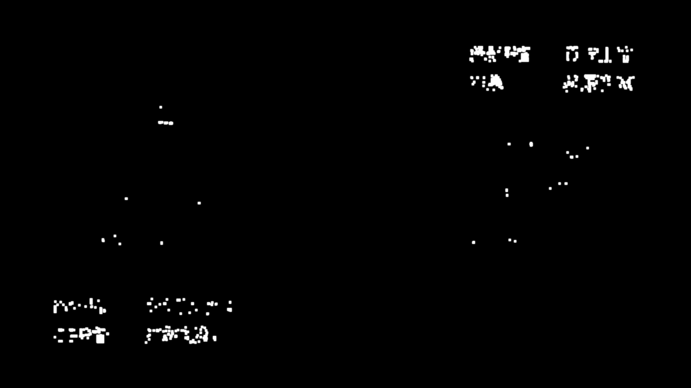 Kaguya-sama: Love Is War — OP (credits mask)
Kaguya-sama: Love Is War — OP (descaled)
Note that if you see the mask catching a lot of other stuff, you might want to consider not descaling that particular frame, or trying a different kernel/values. Chances are that you’re either using the wrong kernel or that the frames you’re looking at are native 1080p.
Manaria Friends — 01 (end card)
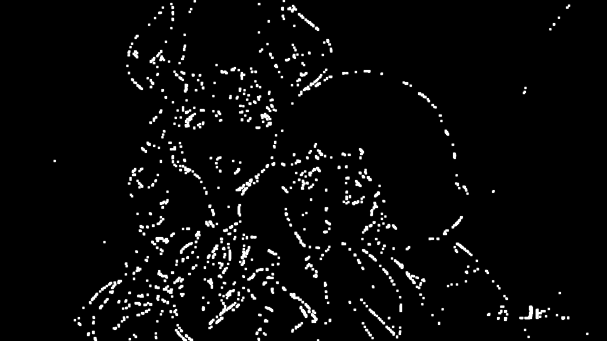 (Don’t descale this)
Dealing with bad descaling
There are various things you can do
to deal with scenes that have issues
even after descaling.
Eedi3 stands out in particular
as a fantastic AA filter
that really nails down bad lineart
caused by bad descaling.
It’s at best a “cheat code”,
however.
While it might fix up some issues,
it won’t fix everything.
It’s also incredibly slow,
so you might want to
use it on just a couple of frames at a time
rather than over the entire clip.
Other than Eedi3, usually the results of bad descaling are so destructive that there isn’t much you can do. If you have an encode that’s badly descaled, you’re better off finding a different one. If you’ve got bad results after descaling yourself, try a different kernel or values. Alternatively, try not descaling at all.
At the end of the day, as mentioned in the introduction, you can’t descale everything perfectly. Sometimes it’s better to think of it as a magical anti-ringing/haloing/aliasing filter rather than a scaler.
For example, here it was used specifically to fix up some bad aliasing in the source.
Akanesasu Shoujo — 01 (src)
Akanesasu Shoujo — 01 (rescaled)
scaled = kgf.inverse_scale(src, height=900, kernel='bicubic', b=0.25, c=0.45, mask_detail=True)
scaled = nnedi3_rpow2(scaled).resize.Spline36(1920, 1080)
Note how this fixed most of the aliasing on the CGI model.
Most, if not all, relevant VapourSynth scripts/plug-ins and their functions can be found in the VapourSynth Database.